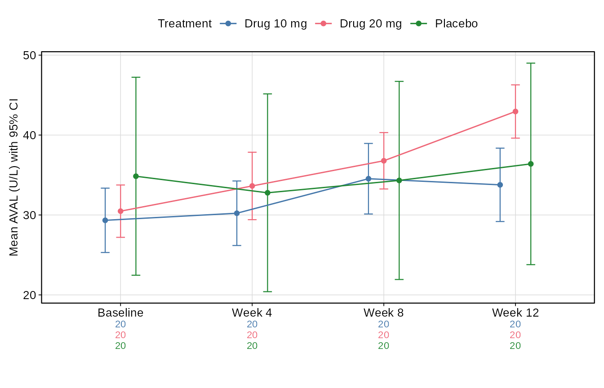

library(tlfstack)
out <- tempfile("tlfstack-")
dir.create(out)tlfstack separates clinical reporting into three seams:
- Builders turn analysis data into a table object or a ggplot.
- Title resolution turns metadata into a title block.
- Renderers turn both into submission-style RTF under one set of conventions.
Because builders are pure functions, a batch program and an interactive app can share all three seams.
1. Conventions as configuration
cfg <- tlf_config(header_left = "Example Organization")
cfg
#> <tlf_config>
#> page : landscape 11x8.5 in, margins 0.5/0.5/0.5/0.5/0.5/0.5; figure body 9x6 in
#> text : Courier New 9 (source 8)
#> figure : Arial 10 (allowed 9-10)
#> header : left='Example Organization' right='Page \pagenumber of \pagefield'
#> render : isolate=TRUE retries=2 timeout=90s dpi=300An organization usually sets this once per session, for example from
a site profile: options(tlfstack.config = cfg).
Alternatively, point the TLFSTACK_CONFIG environment
variable at a YAML file. Every renderer and builder resolves its
configuration through tlf_get_config().
2. Builders: data in, object out
demo <- tbl_demographics(ex_adsl)
demo
#> <tlf_table> 13 row(s) x 6 column(s)
#> Characteristic Statistic Drug 10 mg (N=20) Drug 20 mg (N=20)
#> Age (years) n 20 20
#> Mean (SD) 58.2 (8.4) 59.6 (9.5)
#> Median (Q1, Q3) 58.0 (53.0, 64.5) 57.0 (54.0, 64.0)
#> Min, Max 41.0, 72.0 48.0, 88.0
#> Sex F 12 (60.0%) 13 (65.0%)
#> M 8 (40.0%) 7 (35.0%)
#> Race ASIAN 6 (30.0%) 4 (20.0%)
#> BLACK OR AFRICAN AMERICAN 3 (15.0%) 5 (25.0%)
#> WHITE 11 (55.0%) 11 (55.0%)
#> Ethnicity HISPANIC OR LATINO 3 (15.0%) 2 (10.0%)
#> NOT HISPANIC OR LATINO 17 (85.0%) 18 (90.0%)
#> Age group <65 15 (75.0%) 16 (80.0%)
#> >=65 5 (25.0%) 4 (20.0%)
#> Placebo (N=20) Total (N=60)
#> 20 60
#> 54.4 (10.8) 57.4 (9.7)
#> 54.0 (46.0, 59.5) 56.5 (51.5, 63.5)
#> 31.0, 77.0 31.0, 88.0
#> 13 (65.0%) 38 (63.3%)
#> 7 (35.0%) 22 (36.7%)
#> 4 (20.0%) 14 (23.3%)
#> 4 (20.0%) 12 (20.0%)
#> 12 (60.0%) 34 (56.7%)
#> 8 (40.0%) 13 (21.7%)
#> 12 (60.0%) 47 (78.3%)
#> 17 (85.0%) 48 (80.0%)
#> 3 (15.0%) 12 (20.0%)The dispatcher routes a typed request to the right builder, which is how an app offers a menu of outputs:
tlf_table_types()[, c("type", "class")]
#> type class
#> 1 demographics Table
#> 2 disposition Table
#> 3 ae Table
#> 4 ae_severity Table
#> 5 eff Table
#> 6 shift Table
#> 7 tte Table
#> 8 listing_ae Listing
#> 9 listing_lab Listing
ae <- tlf_build_table("ae", list(adae = ex_adae, adsl = ex_adsl))Figures work the same way:
alt <- ex_adlb[ex_adlb$PARAMCD == "ALT", ]
tlf_build_figure("meanci", alt, opts = list(show_n = TRUE))
3. Titles from a table of contents
Titles, footnotes and output file names come from a TOC. Sources are tried in order. A reachable live source is authoritative; if no source can be read, the result is a TODO placeholder plus a warning, so a dry run is never blocked.
toc_file <- file.path(out, "toc_snapshot.yml")
toc_write(ex_toc, toc_file, source = "vignette example")
titles <- tlf_resolve_titles(
"t_demo",
sources = list(toc_source_dir(out)),
scope = list(study = "STUDY01"),
source = "Program: t_demo.R"
)
titles
#> <tlf_titles> mode: snapshot
#> banner: Table 14.1.1
#> title: Summary of Demographic and Baseline Characteristics
#> subtitle: Safety Population
#> footnote: Percentages are based on the number of subjects in each column.
#> source: Program: t_demo.R
#> file: t-14-01-01-demog.rtf
titles$provenance$mode
#> [1] "snapshot"In production the first source would be the live database, read through a connector you own. tlfstack never reads credentials:
connect <- function() DBI::dbConnect(odbc::odbc(), dsn = "toc")
sources <- list(toc_source_db(connect, DBI::Id(schema = "dbo", table = "toc")),
toc_source_dir("metadata"))A program that produces several outputs selects its row with
number, and {placeholders} in the metadata are
filled explicitly:
tlf_resolve_titles("t_eff", sources = toc_source_dir(out), scope = list(study = "STUDY01"),
number = "14.2.1", vars = list(param = "Alanine Aminotransferase"))$title
#> [1] "Summary of Alanine Aminotransferase" "Change from Baseline by Visit"4. Rendering
f <- file.path(out, titles$output_file_name)
tlf_rtf_table(demo, f, titles = titles)
file.exists(f)
#> [1] TRUEText is written verbatim: t_demo.R stays
t_demo.R, braces and backslashes are escaped, and non-ASCII
characters are written as RTF Unicode.
Figures render by default in an isolated child process with bounded retries. A native crash in the graphics stack then becomes a retriable error instead of killing the session:
p <- tlf_build_figure("km", ex_adtte)
tlf_rtf_figure(p, file.path(out, "f-km.rtf"),
titles = tlf_titles("Kaplan-Meier Estimate of PFS", type = "Figure", number = "14.2.4"),
render = tlf_render_opts(log_file = file.path(out, "render-log.csv")))5. gtsummary and Analysis Results Data
The table body can come from gtsummary or from cards ARD. tlfstack then adds the same page conventions, TOC titles and RTF rendering:
body <- gtsummary::tbl_summary(ex_adsl, by = TRT01A, include = c(AGE, SEX))
tb <- as_tlf_table(body)
tb$footnotes
#> [1] "Median (Q1, Q3); n (%)"
tlf_rtf_table(body, file.path(out, "t-demog-gtsummary.rtf"), titles = titles)The Analysis Results Data behind the table can be exported, one row per statistic, for numeric comparison with an independent SAS result:
ard_file <- file.path(out, "t-demog-ard.csv")
tlf_write_ard(body, ard_file)
head(read.csv(ard_file)[, c("component", "variable", "group1_level", "stat_name", "stat")])
#> component variable group1_level stat_name stat
#> 1 tbl_summary SEX Drug 10 mg n 12
#> 2 tbl_summary SEX Drug 10 mg N 20
#> 3 tbl_summary SEX Drug 10 mg p 0.6
#> 4 tbl_summary SEX Drug 10 mg n 8
#> 5 tbl_summary SEX Drug 10 mg N 20
#> 6 tbl_summary SEX Drug 10 mg p 0.46. One code path, two modes
A batch program and a Shiny app differ only at the two ends:
# Batch: read -> build -> resolve -> render to the deliverables folder.
res <- tlf_build_table("demographics", list(adsl = adsl))
tlf_rtf_table(res, file.path(output_dir, titles$output_file_name), titles = titles)
# Shiny: the same build and render, written to the download handler's file.
output$download <- shiny::downloadHandler(
filename = function() titles$output_file_name,
content = function(file) {
res <- tlf_build_table(input$type, list(adsl = adsl()))
tlf_rtf_table(res, file, titles = titles)
}
)Complete examples ship with the package in
system.file("examples", package = "tlfstack").